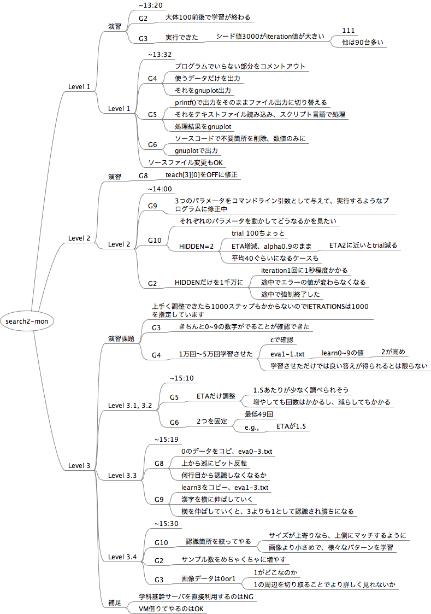

search2-mon

search2-mon
Level 1
演習
~13:20
G2
大体100前後で学習が終わる
G3
実行できた
シード値3000がiteration値が大きい
111
他は90台多い
Level 1
~13:32
G4
プログラムでいらない部分をコメントアウト
使うデータだけを出力
それをgnuplot出力
G5
printf()で出力をそのままファイル出力に切り替える
それをテキストファイル読み込み、スクリプト言語で処理
処理結果をgnuplot
G6
ソースコードで不要箇所を削除、数値のみに
gnuplotで出力
ソースファイル変更もOK
Level 2
演習
G8
teach[3][0]をOFFに修正
Level 2
~14:00
G9
3つのパラメータをコマンドライン引数として与えて、実行するようなプログラムに修正中
G10
それぞれのパラメータを動かしてどうなるかを見たい
HIDDEN=2
trial 100ちょっと
ETA増減、alpha0.9のまま
ETA2に近いとtrial減る
平均40ぐらいになるケースも
G2
HIDDENだけを1千万に
iteration1回に1秒程度かかる
途中でエラーの値が変わらなくなる
途中で強制終了した
Level 3
演習課題
上手く調整できたら1000ステップもかからないのでIETRATIONSは1000を指定しています
G3
きちんと0~9の数字がでることが確認できた
G4
1万回〜5万回学習させた
cで確認
eva1-1.txt
learn0~9の値
2が高め
学習させただけでは良い答えが得られるとは限らない
Level 3.1, 3.2
~15:10
G5
ETAだけ調整
1.5あたりが少なく調べられそう
増やしても回数はかかるし、減らしてもかかる
G6
2つを固定
最低49回
e.g.,
ETAが1.5
Level 3.3
~15:19
G8
0のデータをコピ、eva0-3.txt
上から巡にビット反転
何行目から認識しなくなるか
G9
learn3をコピー、eva1-3.txt
漢字を横に伸ばしていく
横を伸ばしていくと、3よりも1として認識され勝ちになる
Level 3.4
~15:30
G10
認識箇所を絞ってやる
サイズが上寄りなら、上側にマッチするように
画像より小さめで、様々なパターンを学習
G2
サンプル数をめちゃくちゃに増やす
G3
画像データは0or1
1がどこなのか
1の周辺を切り取ることでより詳しく見れないか
補足
学科基幹サーバを直接利用するのはNG
VM借りてやるのはOK